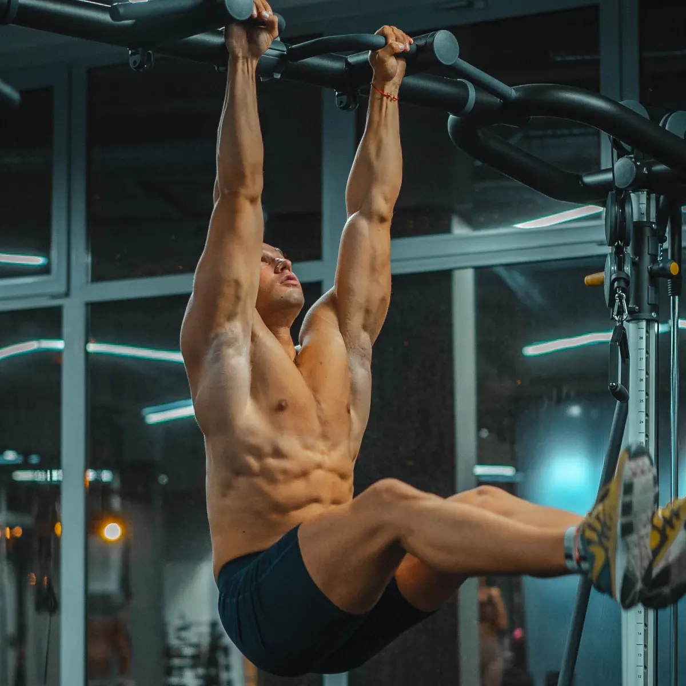
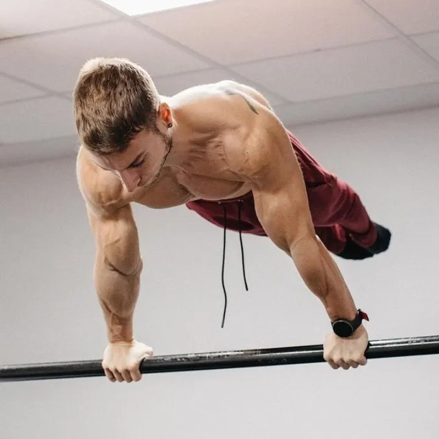
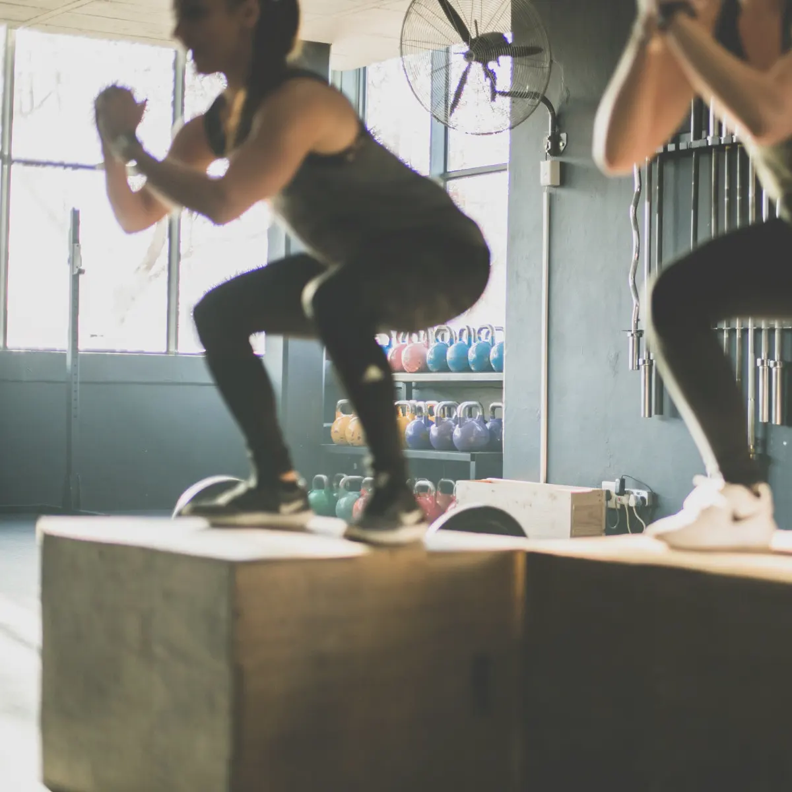

- Fuerza
- Movilidad
- Aumento de masa muscular
- Pérdida de peso



“Es una sólida una rutina de 'principiantes' y cubre la gran mayoría de los conceptos básicos. Lo sé porque ayudé a construir partes de ella. No llevará a nadie en la dirección equivocada para una introducción al entrenamiento de fuerza con el peso corporal y la preparación para habilidades más avanzadas.”
Steven Low, autor de "Overcoming gravity", fisioterapeuta y ex-gimnasta
¿Como empezar en la calistenia? La guía para principiantes en el entrenamiento con peso corporal.
Objetivos:
- Fuerza
- Ganancia de músculo (siempre y cuando tu dieta esté bajo control).
- Pérdida de peso (siempre y cuando tu dieta esté bajo control).
- Para mas detalles, revisa la página de objetivos para ver si esta rutina te ayudará a alcanzar tus objetivos
Estructura general
Calentamiento
- Estiramientos dinámicos
- Preparación de articulaciones
- Práctica de movimiento
Entrenamiento de Fuerza
- 6 ejercicios, emparejados y enfocados a los principales grupos musculares de las zonas superior e inferior de tu cuerpo.
- 3 ejercicios en tripletes que se enfocan en la fuerza de tu zona media.
Equipamiento:
- Un lugar para hacer Remos (Barra Baja, Aros Gimnásticos, una Mesa Resistente; Esto no es negociable sin importar el nivel de habilidades físicas. Los remos son absolutamente integrales a la calidad de la rutina y no pueden ser sustituidos).
- Un lugar para hacer dominadas, si estás en el punto del programa en que agregas dominadas (barras, barra de dominadas, aros, etc.)
- Barras paralelas (hay progresiones tales como las flexiones parado de mano que pueden hacerse en lugar de los ejercicios que ocupan este equipo una vez que hayas alcanzado el nivel apropiado que no las requiere, así que, si no puedes encontrar en lo absoluto la esquina de la encimera de una cocina, dos sillas resistentes, o algo similar, no dejes que esta barra te impida empezar.)
Programación semanal
- Haz esta rutina 3 veces por semana, con al menos un día de descanso (o día de habilidad) entre los días de entrenamiento.
- Así, podrías hacerla en lunes, miércoles y viernes. O martes, jueves y sábado. O miércoles, viernes y domingo. Lo que mejor se acomode a tus horarios.
- No dividas en “splits” la rutina a propósito. Está diseñada para ser una rutina de cuerpo completo.